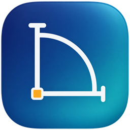

LiVi Draft
A free, open-source CAD and technical drafting app for Windows. Version 0.12.0-rc.1 (pre-alpha)
Draw, edit, dimension, hatch and plot 2D drawings with the command line, object snaps, layers, blocks and the DXF drawings you already know, and open DWG files. LiVi Draft runs on your computer and does not upload your drawings.
Pre-alpha test build. This is an early release for trying out and giving feedback, not for production work. Several drafting features are still unfinished, and saving to DWG can drop content the app does not understand yet. Keep backups of your drawings and compare saved files before relying on them.
Download
For Windows 10 or 11. Most PCs need the 64-bit (x64) build.
Installer (MSI)
Installs for all users and needs administrator rights. Adds Start menu entries.
Portable zip
No installation: unzip into a folder and run lividraft.exe.
Not code-signed yet. Windows SmartScreen will show "Windows protected your PC" the first time you run these files. That is expected for unsigned programs. Check the checksum below, then choose More info, then Run anyway.
How to install
With the installer
- Download the
.msifile for your PC and check its checksum (below). - Double-click it. If SmartScreen appears, choose More info, then Run anyway. Answer Yes to the administrator prompt.
- Follow the wizard, then start LiVi Draft from the Start menu.
To remove it: Settings ▸ Apps ▸ Installed apps ▸ LiVi Draft ▸ Uninstall.
With the portable zip
- Right-click the zip, choose Extract All…, and pick a folder you own, such as
C:\Tools\LiViDraft. Don't run it from inside the zip. - If the program won't start, right-click the zip before extracting, open Properties, tick Unblock, press OK, and extract again.
- Run
lividraft.exe. To remove it, delete the folder.
Check your download
In PowerShell, in the folder you downloaded to:
Get-FileHash .\lividraft-0.12.0-rc.1-windows-x64.msi -Algorithm SHA256
The result must match the SHA-256 below. If it doesn't, delete the file and download it again.
| File | SHA-256 |
|---|---|
| lividraft-0.12.0-rc.1-windows-x64.msi | a12b4aa6ecaaef87f6cf3880bac90ea43a388e41059ede292d8a4a7ed6d397da |
| lividraft-0.12.0-rc.1-windows-x86.msi | 6a93a1842459e0a158519c126443fa39b93f23d4056eee7a3775978b17f4d922 |
| lividraft-0.12.0-rc.1-windows-arm64.msi | d5af2e213774081e74ba4569be27d66cb156c17e0f4a382601b6ed30e03471ab |
| lividraft-0.12.0-rc.1-windows-x64-portable.zip | 978651ac3ac7cc23ba6f236d713be13d1a5301c032325ee5f6df16f8f69ef40d |
| lividraft-0.12.0-rc.1-windows-x86-portable.zip | 93de06b082cc8652df12c2a00f304715c21952876ae987ac632f1e61bba40388 |
| lividraft-0.12.0-rc.1-windows-arm64-portable.zip | 43ff4ae57adf2c82f84e941084a94ec1e2b67a6eefe52be2ce0c80894400f4d7 |
The same list is in SHA256SUMS.txt.
Source, licence and help
- Source code and releases: github.com/sarayunova/lividraft
- Report a problem: GitHub issues, or email contact@liviverse.com
- Licence: MIT or Apache-2.0, at your option.
- Not part of this release: macOS and Linux packages.